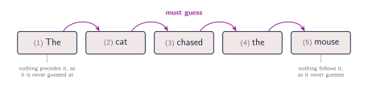
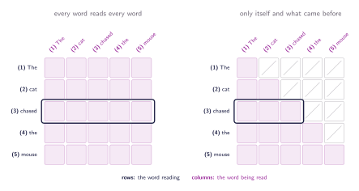
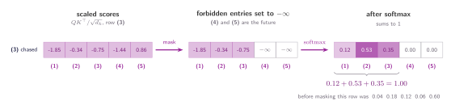
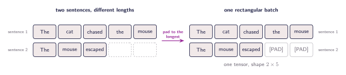

08 · Queries, Keys, and Values
Masking and Causality
Padding masks, causal masks, and how we forbid a query from reading the future.
The last section closed on something we did not consider. That is, which positions a head is allowed to read. The answer so far has been all of them, and the question never came up because of an assumption we never wrote down. We have been treating the sentence as a finished object, handed to the model complete, free to be studied from any angle. Plenty of tasks do look like that. But in some tasks it does not, it is shown the sentence one word at a time and asked what comes next, and for a model in that position, the score table we have spent five sections building is actually the answer key.
The task described above is called next-token prediction, and it runs like this. The sentence goes in as $X$, all five words at once, exactly as in every section so far. What changes is what we ask of the output. Row $i$ is no longer read as a better representation of word $i$, it is read as a guess at word $i+1$. Laid out in a row, with each word carrying its position, the pairing is easy to follow.

Written out, that is:
- (1) The → must guess (2) cat
- (2) cat → must guess (3) chased
- (3) chased → must guess (4) the
- (4) the → must guess (5) mouse
Five words, four guesses. Nothing comes before (1) for it to be guessed from, and nothing comes after (5) for it to guess. The loss measures how wrong those four guesses are, and that one number is the entire training signal.
Nothing about the mechanism has changed since section 05. What has changed is what we want out of it. Back then, chased pulling 0.60 out of mouse was the mechanism working exactly as intended. A verb is incomplete without its object, and that blend turned chased into something closer to chased a mouse. We were building a richer representation of a word out of the words around it, and reaching forward was fair, because the whole sentence was ours to read. The goal is no longer that. We are not asking chased what it means, we are asking it what comes next.
How to learn the next word
Take row (3) again, the weights chased came away with: 0.04, 0.18, 0.12, 0.06 and 0.60. Under the new job, chased has to produce the the at (4). Its row hands it 0.06 of that exact word, and another 0.60 of mouse one step further on again. Two thirds of what chased walks away with is built out of the words it is meant to be predicting. The answer is already inside the vector it has to answer from.
If the trouble is that a word can see what comes after it, we stop letting it. chased may look at (1), (2) and itself, and nothing further. (2) gets one fewer, (4) gets one more, and (1) is left with only itself. Every row keeps its left-hand part and loses everything beyond its own position.

How to delete an entry
Here's how this works. Instead of removing the cells, we have a trick to make them count for nothing. Before the softmax, we set every forbidden score to $-\infty$. The softmax raises $e$ to each score, and $e^{-\infty} = 0$, so those cells come out with weight zero. The row still sums to one, since the division is by the total of what is left.

We can do all of that with one addition. Build a matrix $M$ of the same shape as the score table, holding $0$ everywhere a word is allowed to read and $-\infty$ everywhere it is not:
where $i$ is the row, the word doing the reading, and $j$ is the column, the word being read, so the condition $j \leq i$ is just this word came no later than mine. Adding $0$ leaves a score exactly as it was and adding $-\infty$ takes it out, which means the whole rule is one matrix added to the scores:
$M$ is $n \times n$, the same shape as $QK^{\top}$, and it is built from the length of the sentence alone. It does not look at the words, so every sentence of five tokens gets the same $M$, and the same one is reused by every head and every sentence in the batch. Compare it with section 05 and one extra term has appeared.
One pass, four guesses
The mask is not the only way to keep the model honest. We could have run it once per prefix instead: show it The and ask for cat, then show it The cat and ask for chased, then The cat chased, and so on. Nothing leaks that way either, because the words it must not see are not in the input at all. It also costs four forward passes for one five-word sentence, and every pass recomputes the prefix that the pass before it had already worked through.
The mask makes those four passes unnecessary, because one masked pass already contains them. Row (3) may read (1), (2) and itself and nothing else, which is exactly what a run on The cat chased would have had in front of it. The same holds for every other row. A single pass over the whole sentence computes all four prefixes at once, so the four guesses come out together and the loss collects all four at the same time.
Sentences of different lengths
Everything so far has been one sentence at a time. Training does not work that way though, it runs a batch of sentences at once, and a batch is a single tensor. A tensor is rectangular, so every sentence in the batch has to be the same length, and as you can imagine sentences are usually not the same length. The usual answer is to pick the longest one and fill the others out with a filler token until they match, which is called padding.

The trouble is that the model cannot tell the difference. A pad is a token like any other, it has an embedding, produces a key and a value, its score against every query is a real number and the softmax gives it a share of the weight. Nothing in the mechanism marks it as filler! Real words end up with part of their answer built out of positions that stand for nothing, and how large that part is depends on whatever numbers the pad embedding happens to hold.
Let's see how we can represent that, say we train on $B$ sentences at once. Pad every one of them to the length of the longest, call that $n$, and the batch arrives as $X$ of shape $B \times n \times d_{\text{model}}$. Sentence $b$ has a true length $n_b \leq n$, and everything past $n_b$ is filler. Masking that filler is one more matrix of the same kind as $M$:
Observe that the index $i$ is absent from the right-hand side of the equation. Because the masking criteria are identical for every query, $P^{(b)}$ effectively neutralizes entire columns, whereas $M_{ij}$ depends on both indices and consequently masks a triangular region. Despite having different structural shapes, both masks utilize the same underlying mechanism and are added to the scores prior to the softmax operation:
![Two rows, one per sentence from the padding figure above. Each row shows four five by five grids: the raw scores, all cells filled; M, a triangle of zeros with minus infinity above the diagonal, identical in both rows; P for that row's sentence; and the sum of all three, the cells that survive. In the top row, five real words, P is all zeros and the sum is just the triangle. In the bottom row, three real words and two pad slots, P blocks its last two columns in every row, and the sum is the triangle cut down further to its first three columns.](../figures/build/mask_matrices.svg)
The matrix $M$ has dimensions $n \times n$ and is shared across the entire batch, as it relies solely on the sequence length. While $P^{(b)}$ is theoretically $n \times n$ as well, its values remain constant down each column. In practice, this is implemented by maintaining a single boolean flag per position for each sentence (totaling $B \times n$ flags) and broadcasting this vector across the rows and the $h$ attention heads.
Applying both matrices simultaneously is sufficient to mask whatever either individual mask targets, because adding $-\infty$ to any finite score invariably yields $-\infty$. The final loss function is then computed exclusively over positions containing actual words ($i \leq n_b$). Consequently, the computations performed by the padded rows are irrelevant, as those outputs are never utilized by the model.
Here's the summary of why each matrix is needed:
- The Padding Mask ($P$): Handles batching irregularities. It hides the meaningless filler tokens added to the end of shorter sentences so that real words do not pull context from empty space.
- The Sequence Mask ($M$): Handles chronological logic. It hides future tokens (carving out a triangle shape) to ensure the model only attends to a word and the words that came before it, preventing it from "peeking" into the future.
- Why both are needed: They solve two independent problems at the same time. $M$ enforces the left-to-right reading rules for the sequence, while $P$ cleans up the structural artifacts left behind by forcing different-length sentences into a single, uniform batch.
import torch
import torch.nn.functional as F
def masked_attention(raw_scores, true_lengths):
"""
raw_scores: (batch_size, seq_len, seq_len) prior to softmax
true_lengths: (batch_size,) actual length of each sentence without padding
"""
batch_size, seq_len, _ = raw_scores.shape
# 1. Sequence (Causal) Mask: M
# 0 on/below the diagonal, -inf above it, the same for every sentence
causal_mask = torch.triu(
torch.full((seq_len, seq_len), float('-inf')),
diagonal=1
)
# 2. Padding Mask: P
# Create an array of positions [0, 1, 2, ..., seq_len - 1]
positions = torch.arange(seq_len).unsqueeze(0)
# True where the position index is past the sentence's true length
is_pad = positions >= true_lengths.unsqueeze(1)
# 0 for real positions, -inf for pad positions, identical for every row,
# so it broadcasts over the query dimension: (batch, 1, seq_len)
pad_mask = torch.where(
is_pad, float('-inf'), 0.0
).unsqueeze(1)
# 3. scores + M + P, exactly as in the formula above
masked_scores = raw_scores + causal_mask + pad_mask
# 4. Softmax (-inf becomes 0.0)
attention_weights = F.softmax(masked_scores, dim=-1)
return attention_weightsEnforcing Causality
We have built so far a mask that enforces a strict left-to-right reading order. By hiding future tokens, we ensure our model respects the passage of time and cannot peek at the answer. This way, causality is preserved.
But if we look closely at the core attention formula, we still have a big problem. By scrambling the order of the input words, the dot products between their queries and keys will remain the same! The attention mechanism inherently treats the sentence like a bag of words, computing everything simultaneously with no inherent sense of sequence.
The mask tells the model which words it is allowed to look at, but the model still has no concept of where those words sit in the sentence. To fix this blind spot, we have to inject this concept of order before the attention mechanism begins.